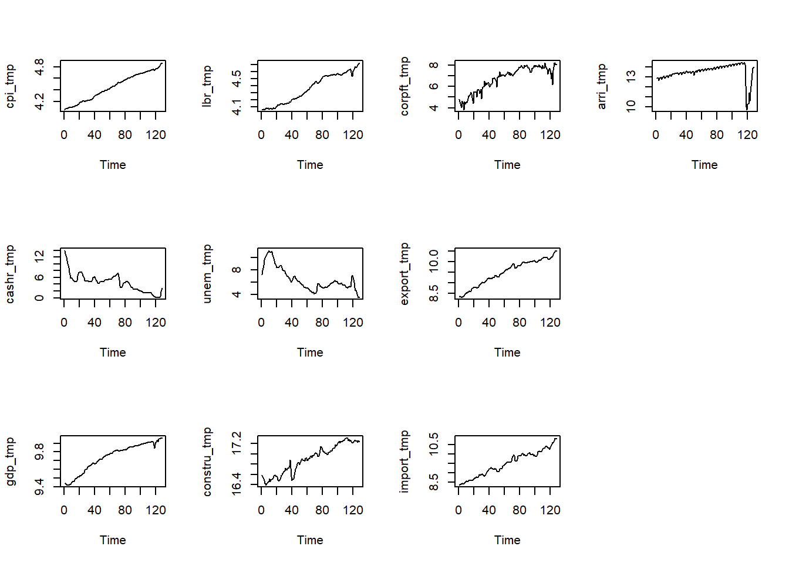

Bayesian VARs Application: Inflation Rate Forecasts
Abstract. This reseach project is motivated by the prevailing high inflation environment post pandemic, aiming to investigate and forecast how inflation will evolve over time under the applicaion of the Bayesian VARs.
Keywords. Bayesian VARs, inflation, forecasting
Objectives & Motivations
Since post pandemic, the inflation in Australia has increased largely, reaching at 7.8% per annual reported in the December quarter of 2022, becoming the highest rate in over 30 years Australian Financial Review Business Summit. Given a high inflation can have negative impact in many aspects, such as reducing the consumer’s purchasing power, and changing spending behaviour and investment decisions, it is not only a problem that every central bank is now aiming to deal with in order to achieve the price stability and the sustainable economic growth, but also can each one of us get to know how it will evolve in the future as it relates closely to our daily life.
The objective of this research project is to apply Bayesian VARs model in 10 economic variables to forecast inflation through the dynamic interaction.
The questions to address is “what’s the inflation in the next three years, and how soon the current inflation can return to the annual target, that is, 2 to 3 per cent in Australia?”.
Data & Data Properties
The 10 economic variables of interest are listed below,
\(cpi_{t}\): the Consumer Price Index from the Australian Bureau of Statistics (ABS),
\(cashr_{t}\): the Cash Rate of the Reserve Bank of Australia (RBA),
\(gdp_{t}\): the Gross Domestic Product per capita seasonal adjusted from the Australian Bureau of Statistics (ABS),
\(lbr_{t}\): the unit labour cost seasonal adjusted from the Australian Bureau of Statistics (ABS),
\(unem_{t}\): the unemployment rate seasonal adjusted from the Australian Bureau of Statistics (ABS),
\(constru_{t}\): the Construction Work Done seasonal adjusted from the Australian Bureau of Statistics (ABS),
\(corpft_{t}\): the company profits before income tax seasonal adjusted from the Australian Bureau of Statistics (ABS),
\(export_{t}\): the International export in Goods and Services seasonal adjusted from the Australian Bureau of Statistics (ABS),
\(import_{t}\): the International import in Goods and Services seasonal adjusted from the Australian Bureau of Statistics (ABS),
\(arri_{t}\): the Overseas Arrivals from the Australian Bureau of Statistics (ABS).
A time series plot is displayed below to visualize how the 10 proposed variables vary in the past 33 years starting from September 1990 to December 2022.
The autocorrelation plot is presented below. It is clear that all variable show some statistical significance in lag 1 indicating the random walk process.

A formal Augmented Dickey-Fuller (i.e. ADF) test is performed to test the stationarity of the variables.
## Augmented Dickey-Fuller test
adf.results = matrix(NA, ncol(variables_all), 1)
for (i in (1:ncol(variables_all))){
adf = adf.test(variables_all[,i], k=4)
adf.results[i] = round(adf$p.value,2)
}
colnames(adf.results) = c("p.value")
rownames(adf.results) = colnames(variables_all)
adf.results p.value
cpi_tmp 0.31
cashr_tmp 0.01
gdp_tmp 0.82
lbr_tmp 0.63
unem_tmp 0.47
constru_tmp 0.08
corpft_tmp 0.60
export_tmp 0.45
import_tmp 0.33
arri_tmp 0.06# ADF test on I(1)
diff.all = na.omit(diff(variables_all))
for (i in (1:ncol(diff.all))){
adf = adf.test(diff.all[,i], k=4)
adf.results[i] = round(adf$p.value,2)
}
colnames(adf.results) = c("diff.p.value")
rownames(adf.results) = colnames(variables_all)
adf.results diff.p.value
cpi_tmp 0.20
cashr_tmp 0.01
gdp_tmp 0.01
lbr_tmp 0.01
unem_tmp 0.01
constru_tmp 0.01
corpft_tmp 0.01
export_tmp 0.01
import_tmp 0.01
arri_tmp 0.02# ADF test on I(2) - CPI
diff2.cpi = na.omit(diff(diff.all[,1]))
adf = adf.test(diff2.cpi, k=4)
adf.results = round(adf$p.value,2)
adf.results[1] 0.01According to the ADF test results, most of the variables, expect for \(cpi_{t}\) and \(cashr_{t}\), are integrated at 1. This leads to applying the Minnesota prior in the model, which specify the stylised facts, such as unit root non-stationary.
Model and Hypotheses
The basic model equation we will build upon throughout the research project is stated below with the error term specified in the matrix-variate normal distribution, which includes a \(T \times 10\) dimension mean, a \(10 \times 10\) dimension row specific covariance matrix and a \(T\) dimension identity matrix referring to the column specified covariance.
\(Y\) is a \(T \times 10\) matrix representing the \(10\) variables introduced in the model as explained previously and each variable spreading out to \(T\) periods.
\(X\) is a \(T \times K\) matrix with \(T\) referring to the periods of time and \(K = 1+10 \times P\) referring to \(1\) intercept and \(10\) variables, each of which has \(p\) lags.
\(A\) is a \(K \times N\) matrix with \(K\) corresponding to the total number of coefficients in each equation.
\(E\) is a \(T \times 10\) matrix referring to the error term in each of the equation.
Modelling Framework
Basic Model
The basic model is built on the natural-conjugate prior distribution, which is specified as a matrix normal inverse Wishart distribution. Miranda-Agrippino and Ricco (2018) assert that “in scientific data analysis, priors on the model coefficients do not incorporate the investigator’s ‘subjective’ beliefs, instead, they summarise stylised representations of the data generating process”. Therefore, Minnesota prior expressing such stylised facts, e.g. unit root non-stationary, discovered in the macroeconomic time series is applied to form the specifications on the parameters of the prior distribution.
Below presents the estimation procedures to draw posterior samples.
Step 1: Prior distribution is presented below. We will specify \(\underline{A}\), \(\underline{V}\), \(\underline{S}\) and \(\underline{v}\).
\[\begin{align} p(A,\Sigma) &= p(A|\Sigma)p(\Sigma)\\ A|\Sigma &\sim MN_{K\times N}(\underline{A}, \Sigma,\underline{V} ) \\ \Sigma &\sim IW_{N}(\underline{S}, \underline{v}) \end{align}\]- \(\underline{A}\) is a \(K \times N\) matrix being set to reflect the random walk with no drift process with the coefficients being 1 on its own lag 1, and 0 on other lags.
- \(\underline{V}\) represents the shrinking level of the specified \(\underline{A}\). It’s a \(K\) vector diagonal matrix with the diagonal elements set to be the desired shrinking amount, the larger the figure, the looser the shrinkage meaning larger variance is allowed; and off-diagonal being 0 as less information can be known about the covariances among coefficients.
\(\underline{S}\) follows the econometrics convention to set as a \(N\) vector diagonal matrix with the estimated \(\widehat{\sigma}^{2}\) of each variable being the diagonal elements.
\(\underline{v}\) is \(N+1\).
Step 2: Given the posterior distribution is also a matrix normal inverse Wishart distribution and its parameters are composed of data and prior parameters. We can insert parameters as specified in step 1 in the below equations.
\[\begin{align} p(A,\Sigma | Y,X) &= p(A|Y,X,\Sigma)p(\Sigma|Y,X)\\ p(A|Y,X,\Sigma)&\sim MN_{K\times N}(\overline{A}, \Sigma,\overline{V} ) \\ p(\Sigma|Y,X)&\sim IW_{N}(\overline{S}, \overline{v}) \end{align}\] \[\begin{align} \overline{V} &= (X'X + \underline{V}^{-1})^{-1} \\ \overline{A} &= \overline{V}(X'Y+\underline{V}^{-1}\underline{A}) \\ \overline{v} &= T + \underline{v} \\ \overline{S} &= \underline{S}+Y'Y+\underline{A'}\underline{V}^{-1}\underline{A}-\overline{A'}\overline{V}^{-1}\overline{A} \\ \end{align}\]Step 3: Given \(\overline{A}\), \(\overline{V}\), \(\overline{S}\) and \(\overline{v}\) are now specified, we can firstly draw \(\Sigma\) from \(IW_{N}(\overline{S}, \overline{v})\), then take \(\Sigma\) as known and insert it in \(MN_{K\times N}(\overline{A}, \Sigma,\overline{V} )\) to draw \(A\).
The above steps are summarised in the below code to generate the sample draws from the joint posterior distribution.
## Posterior sample draw function
posterior.draws = function (S, Y, X){
# normal-inverse Wishard posterior parameters
V.bar.inv = t(X)%*%X + diag(1/diag(V.prior))
V.bar = solve(V.bar.inv)
A.bar = V.bar%*%(t(X)%*%Y + diag(1/diag(V.prior))%*%A.prior)
nu.bar = nrow(Y) + nu.prior
S.bar = S.prior + t(Y)%*%Y + t(A.prior)%*%diag(1/diag(V.prior))%*%A.prior - t(A.bar)%*%V.bar.inv%*%A.bar
S.bar.inv = solve(S.bar)
# posterior draws
Sigma.posterior = rWishart(S, df=nu.bar, Sigma=S.bar.inv)
Sigma.posterior = apply(Sigma.posterior,3,solve)
Sigma.posterior = array(Sigma.posterior,c(N,N,S))
A.posterior = array(rnorm(prod(c(dim(A.bar),S))),c(dim(A.bar),S))
L = t(chol(V.bar))
for (s in 1:S){
A.posterior[,,s]= A.bar + L%*%A.posterior[,,s]%*%chol(Sigma.posterior[,,s])
}
output = list(A.posterior=A.posterior, Sigma.posterior=Sigma.posterior)
return(output)
}
## Applying function
# A.hat = solve(t(X)%*%X)%*%t(X)%*%Y
posterior.sample.draws = posterior.draws(S=50000, Y=Y, X=X)
# round(apply(posterior.sample.draws$A.posterior, 1:2, mean),6)
# round(apply(posterior.sample.draws$Sigma.posterior, 1:2, mean),6)Model Extension
The model extension applied in this research report is to build hierarchical model by imposing the inverse gamma 2 distribution on the Minnesota shrinkage parameter kappa \(k\). After specifying \(k\), we can write the posterior distribution as below.
\[\begin{align} p(A,\Sigma, k |Y,X) &\propto L(Y,X|A,\Sigma)p(A,\Sigma, k)\\ &\propto L(Y,X|A,\Sigma)p(A |\Sigma, k)p(\Sigma)p(k) \end{align}\]where, each \(p(A |\Sigma, k)\), \(p(\Sigma)\), \(p(k)\) is specified below.
\[\begin{align} p(A |\Sigma, k) &\sim MN_{K\times N}(\underline{A}, \Sigma, k\underline{V})\\ p(\Sigma) &\sim IW_{N}(\underline{S},\underline{v})\\ p(k) &\sim IG2(\underline{S_{k}}, \underline{v_{k}} ) \\ \end{align}\]We multiply the corresponding distribution probability density functions (i.e. pdf) of \(L(Y,X|A,\Sigma)p(A|\Sigma, k)p(\Sigma)p(k)\), the kernel of the posterior distribution is written as below.
- The kernel of the fully conditional posterior distribution of \(A\) and \(\Sigma\) is as below.
- The kernel of the fully conditional posterior distribution of \(k\) is as below.
According to the above two kernels, the equation for each posterior parameter can be written as below.
\[\begin{align} p(A |Y,X,\Sigma, k) &\sim MN_{K\times N}(\overline{A}, \Sigma, \overline{V})\\ p(\Sigma|Y,X,A,k) &\sim IW_{N}(\overline{S},\overline{v})\\ p(k |Y,X, A,\Sigma) &\sim IG2(\overline{S_{k}}, \overline{v_{k}} ) \\ \overline{V} &= (X'X + (k\underline{V})^{-1})^{-1}\\ \overline{A} &= \overline{V}(X'Y+(k\underline{V})^{-1}\underline{A}) \\ \overline{v} &= T+\underline{v}\\ \overline{S} &= \underline{S}+Y'Y+\underline{A}'(k\underline{V})^{-1}\underline{A}-\overline{A}'\overline{V}^{-1}\overline{A} \\ \overline{v_{k}} &= kN + \underline{v_{k}}\\ \overline{S_{k}} &= TR[\Sigma^{-1}(A-\underline{A})'\underline{V}^{-1}(A-\underline{A})]+\underline{S_{k}}\\ \end{align}\]Since we don’t have an analytical derivation of the joint posterior distribution \(p(A,\Sigma, k |Y,X)\), the Gibbs sampler method is applied to generate random draws based on the full conditional posterior distribution of \(A\), \(\Sigma\) and \(k\) as presented above. The steps of the sample draws are explained below.
Initialize \(k\) at \(k^{(0)}\).
At each iteration \(s\):
Draw random matrices for \(A^{(s)}\) and \(\Sigma^{(s)}\) from \(p(A,\Sigma|Y,X,k^{(s-1)})\).
Draw a random number for \(k^{(s)}\) from \(p(k |Y,X,A^{(s)},\Sigma^{(s)})\).
Repeat steps 1 and 2 \(S_{1} + S_{2}\) times.
Discard the first \(S_{1}\) draws that allows the algorithm to converge to the stationary posterior distribution.
Output is the sample draws from the joint posterior distribution \(\left\{ {A^{(s)}, \Sigma^{(s)}, k^{(s)}} \right\}^{S_{2}}_{s=S_{1}+1}\).
The above steps are summarised in the below code to generate the sample draws from the joint posterior distribution.
# setup
S1 = 100 # determine the burn-in draws
S2 = 1000 # number of draws from the final simulation
total_S = S1+S2
A.posterior = array(NA, dim = c((1+N*p),N,S1+S2))
Sigma.posterior = array(NA, dim = c(N,N,S1+S2))
k.posterior = matrix(NA, S1+S2, 1)
k.posterior[1] = 10 # set k0
# Prior IG2 distribution: kappa
S.k.prior = 2
nu.k.prior = 4
## Posterior sample draw function for extended model
posterior.draws.exten = function (total_S, Y, X){
for (s in 1:total_S){
# normal-inverse Wishard posterior parameters
V.bar.inv = t(X)%*%X + diag(1/ diag( k.posterior[s]* V.prior))
V.bar = solve(V.bar.inv)
A.bar = V.bar%*%(t(X)%*%Y + diag(1/diag( k.posterior[s]* V.prior))%*%A.prior)
nu.bar = nrow(Y) + nu.prior
S.bar = S.prior + t(Y)%*%Y + t(A.prior)%*%diag(1/diag( k.posterior[s]* V.prior))%*%A.prior - t(A.bar)%*%V.bar.inv%*%A.bar
S.bar.inv = solve(S.bar)
# posterior draws for A and Sigma
Sigma.posterior.IW = rWishart(1, df=nu.bar, Sigma=S.bar.inv)
Sigma.posterior.draw = apply(Sigma.posterior.IW,3,solve)
Sigma.posterior[,,s] = Sigma.posterior.draw
A.posterior[,,s] = array(rnorm(prod(c(dim(A.bar),1))),c(dim(A.bar),1))
L = t(chol(V.bar))
A.posterior[,,s] = A.bar + L%*%A.posterior[,,s]%*%chol(Sigma.posterior[,,s])
# posterior draws for k
if (s!=total_S){
S.k.bar = sum(diag( solve( Sigma.posterior[,,s] ) * t(A.posterior[,,s]-A.prior)%*%diag(1/diag(V.prior))%*%(A.posterior[,,s]-A.prior) )) + S.k.prior
nu.k.bar = (1+p*N)*N+ nu.k.prior
k.draw.tmp = rchisq(1, df=nu.k.bar)
k.draw = S.k.bar/k.draw.tmp
k.posterior[s+1] = k.draw
}
}
output = list (A.posterior.exten = A.posterior, Sigma.posterior.exten = Sigma.posterior, k.posterior.exten = k.posterior)
return(output)
}
## Applying function
posterior.ext = posterior.draws.exten(total_S = total_S, Y=Y, X=X)
# round(apply(posterior.ext$A.posterior.exten[,,(S1+1):S2], 1:2, mean),6)
# round(apply(posterior.ext$Sigma.posterior.exten[,,(S1+1):S2], 1:2, mean),6)Model Proof
m1 = cumsum(rnorm(1000, 0, sd=1))
m2 = cumsum(rnorm(1000, 0, sd=1))
m= cbind(m1,m2)
## Define data X, Y
Y = ts(m[2:nrow(m),], frequency=1)
X = matrix(1,nrow(Y),1)
X = cbind(X,m[2:nrow(m)-1,])
## Test on basic model
N = ncol(Y)
p = frequency(Y)
A.hat = solve(t(X)%*%X)%*%t(X)%*%Y
Sigma.hat = t(Y-X%*%A.hat)%*%(Y-X%*%A.hat)/nrow(Y)
# Prior distribution specification - Minnesota prior
kappa.1 = 1 # shrinkage for A1 to Ap
kappa.2 = 10 # shrinkage for constant
A.prior = matrix(0,nrow(A.hat),ncol(A.hat))
A.prior[2:(N + 1),] = diag(N)
V.prior = diag(c(kappa.2,kappa.1*((1:p)^(-2))%x%rep(1,N)))
S.prior = diag(diag(Sigma.hat))
nu.prior = N+1
# Applying function
posterior.sample.draws = posterior.draws(S=100000, Y=Y, X=X)
round(apply(posterior.sample.draws$A.posterior, 1:2, mean),6) [,1] [,2]
[1,] 0.117355 0.129449
[2,] 0.995922 -0.000544
[3,] -0.001964 0.992443round(apply(posterior.sample.draws$Sigma.posterior, 1:2, mean),6) [,1] [,2]
[1,] 0.953227 0.018788
[2,] 0.018788 1.003323# setup
kappa.1 = 1 # shrinkage for A1 to Ap
kappa.2 = 10 # shrinkage for constant
S1 = 100 # determine the burn-in draws
S2 = 1000 # number of draws from the final simulation
total_S = S1+S2
A.posterior = array(NA, dim = c((1+N*p),N,S1+S2))
Sigma.posterior = array(NA, dim = c(N,N,S1+S2))
k.posterior = matrix(NA, S1+S2, 1)
k.posterior[1] = 10 # set k0
# Prior IG2 distribution: kappa
S.k.prior = 2
nu.k.prior = 4
# Applying function
posterior.ext = posterior.draws.exten(total_S = total_S, Y=Y, X=X)
round(apply(posterior.ext$A.posterior.exten[,,(S1+1):S2], 1:2, mean),6) [,1] [,2]
[1,] 0.120703 0.129827
[2,] 0.995930 -0.000739
[3,] -0.002109 0.992580round(apply(posterior.ext$Sigma.posterior.exten[,,(S1+1):S2], 1:2, mean),6) [,1] [,2]
[1,] 0.952610 0.017518
[2,] 0.017518 1.005319Forecasting
The aim of the forecasting is to predict how the variable of interest \(cpi_{t}\) and \(cashr_{t}\) are going to evolve in the next three years, that is \(h=12\) steps ahead.
The forecasts are built on both the basic and the extended models and the results are presented below.
## Applying function
posterior.sample.draws = posterior.draws(S=50000, Y=Y, X=X)
A.posterior.simu = posterior.sample.draws$A.posterior
Sigma.posterior.simu = posterior.sample.draws$Sigma.posterior
## Three-year ahead forecasting h=12
# set up
h = 12
S = 50000
Y.h = array(NA,c(h,N,S))
# to calculate A.bar
V.bar.inv = t(X)%*%X + diag(1/diag(V.prior))
V.bar = solve(V.bar.inv)
A.bar = V.bar%*%(t(X)%*%Y + diag(1/diag(V.prior))%*%A.prior)
# sampling predictive density
for (s in 1:S){
A.posterior.draw = A.posterior.simu[,,s]
Sigma.posterior.draw = Sigma.posterior.simu[,,s]
x.Ti = Y[(nrow(Y)-p+1):nrow(Y),]
x.Ti = x.Ti[p:1,]
for (i in 1:h){
x.T = c(1,as.vector(t(x.Ti)))
Y.f = rmvnorm(1, mean = x.T%*%A.posterior.draw, sigma=Sigma.posterior.draw)
x.Ti = rbind(Y.f,x.Ti[1:(p-1),])
Y.h[i,,s] = Y.f[1:N]
}
}

The above graph shows the 12-step ahead predictive densities for \(cpi_{t}\) and \(cashr_{t}\) on the basic model. It can be clearly seen that \(cpi_{t}\) would keep slowly growing from \(\log(4.9)\) when \(h=1\) to roughly \(\log(4.95)\) reaching the end 2025, indicating a 0.44% (i.e. \(\log(4.95) - \log(4.9)\) growth rate over 3 years time.
However, \(cashr_{t}\) moves differently. It would first increase in the first 3 periods then decrease for the rest 9 periods, reaching below 0 at the end of 2025. The negative \(cashr_{t}\) might be unconventional, however the general way of how it evolves over time is in line with the expectation.
# setup
S1 = 5000 # determine the burn-in draws
S2 = 50000 # number of draws from the final simulation
total_S = S1+S2
A.posterior = array(NA, dim = c((1+N*p),N,S1+S2))
Sigma.posterior = array(NA, dim = c(N,N,S1+S2))
k.posterior = matrix(NA, S1+S2, 1)
k.posterior[1] = 10 # set k0
# Prior IG2 distribution: kappa
S.k.prior = 2
nu.k.prior = 4
## Applying function
posterior.ext = posterior.draws.exten(total_S = total_S, Y=Y, X=X)
A.posterior.ext.simu = posterior.ext$A.posterior.exten[,,(S1+1):S2]
Sigma.posterior.ext.simu = posterior.ext$Sigma.posterior.exten[,,(S1+1):S2]
## Three-year ahead forecasting h=12
# set up
h = 12
S = 45000
Y.h.ext = array(NA,c(h,N,S))
# sampling predictive density
for (s in 1:S){
A.posterior.draw = A.posterior.ext.simu[,,s]
Sigma.posterior.draw = Sigma.posterior.ext.simu[,,s]
x.Ti = Y[(nrow(Y)-p+1):nrow(Y),]
x.Ti = x.Ti[p:1,]
for (i in 1:h){
x.T = c(1,as.vector(t(x.Ti)))
Y.f = rmvnorm(1, mean = x.T%*%A.posterior.draw, sigma=Sigma.posterior.draw)
x.Ti = rbind(Y.f,x.Ti[1:(p-1),])
Y.h.ext[i,,s] = Y.f[1:N]
}
}

The above graph shows the 12-step ahead predictive densities for \(cpi_{t}\) and \(cashr_{t}\) on the extended model. Similar to the basic model, \(cpi_{t}\) would keep slowly growing from \(\log(4.9)\) when \(h=1\), but reaching a slightly lower point \(\log(4.94)\) at year 2025 end. This small change in the ending point leads to a large drop in the growth rate, with now being 0.35% over 3 years. \(cashr_{t}\) likewise would first increase in the first 3 periods then decrease for the rest 9 periods, however it’s more closed to 0 at the end of 2025 rather than clearly showing to be negative.
Overall, with forests using both models, it looks like \(cpi_{t}\) will not return to the annual target, 2-3 per cent by year 2025 end in Australia.